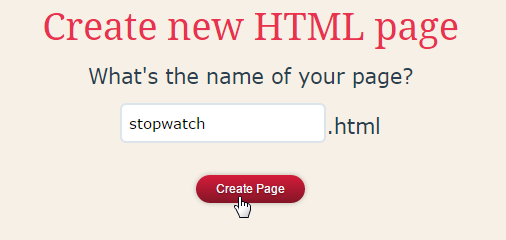
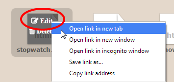
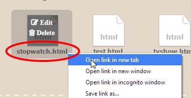
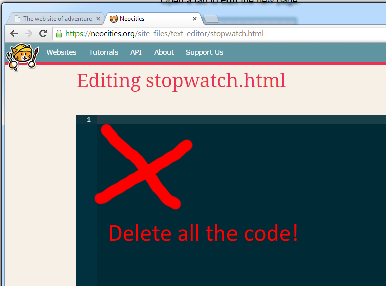
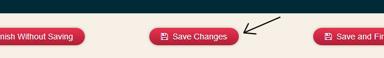
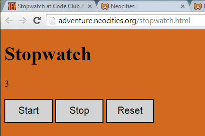
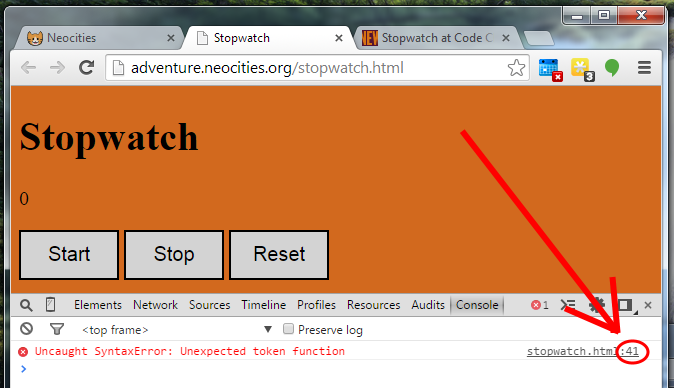

Stopwatch
I asked a programmer to make a stopwatch to help me practice my speech. But they made it all wrong!
(This activity uses JavaScript and jQuery.)
What skills do I need?
This is best if you've tried HTML, CSS and maybe even a little bit of JavaScript before.
By now you should also know how to create a new page in Neocities, view it and open it for editing.
Part 1: Set up Neocities
Make a new page:

Call it stopwatch
Open a tab to edit the new page.
Open a tab to view the new page.
In the editing tab, delete all the code.
Copy and Paste this code instead:
<!DOCTYPE html>
<html>
<head>
<meta charset='utf-8'>
<script src="//ajax.googleapis.com/ajax/libs/jquery/2.1.1/jquery.min.js"></script>
<title>Stopwatch</title>
<style>
/*This is the start of the CSS*/
body {
background-color: chocolate;
font-size: 20px;
}
button {
border: 2px solid black;
background-color: lightgrey;
width: 100px;
height: 50px;
font-size: 20px;
}
</style>
</head>
<body>
<h1>Stopwatch</h1>
<p class="time">0</p>
<button class="button1">Start</button>
<button class="button2">Stop</button>
<button class="button3">Reset</button>
<script>
//Hello! This is the start of the JavaScript.
//this variable holds the number to display
var timer;
//this variable decides if I am counting right now
var counting;
//set up
timer = 9999;
counting = true;
//tick tick tick tick...
var tick = function () {
if (counting === true) {
timer = timer + 1;
}
//display the timer value
$(".time").text(timer);
}
var start = function () {
//not working right...
alert("Start!");
}
var stop = function () {
//um...
timer = 0;
}
var reset = function () {
//not sure this is right
$(".button3").fadeOut();
}
//call the function 'tick' over and over again
setInterval(tick, 50);
//When you click on a button it will call a function:
$(".button1").on("click", start);
$(".button2").on("click", stop);
$(".button3").on("click", reset);
//This is the end of the javascript
</script>
</body>
</html>
CHECK that you copied all the code. Save the page, then view it.
If it looks like this, you're ready to start!
What is this?
I asked a programmer to make an online stopwatch for me.
But they messed it up! :/
Can you fix it?
Just JavaScript
You only need to change the JavaScript for this activity. The HTML and CSS works (but you can still improve it if you like).
The JavaScript starts with a <script> tag.
Part 2: Developer Tools
One mistake in your JavaScript can make everything stop working!
The good news is, developer tools help us find the mistake.
When viewing your page, open the Javascript Console. If you're using Google Chrome, press CTRL+SHIFT+I (on Windows) or CMD+OPTION+I (on Mac) then find Console in the options that pop up.
(If you are not using Google Chrome, you still have a JavaScript console. Look in the options for 'Developer Tools'
Now refresh the page. The console will show you if there are errors, and the line number where they happen. This error is on line number 41.
Hopefully that helps. Remember, the most common errors are that you are missing some brackets - for every "{" there must be a matching "}" and for every "(" there is a matching ")".
Part 3: Start from zero
The timer should start from zero, not from 9999.
Find out why the timer is starting from that number and fix it.
CHECK the timer starts from zero.
Part 4: Wait until we're ready
The timer starts counting automatically. I want it to just wait, so nothing happens until I click "start".
Find out why the timer starts automatically. Read the 'tick' function for a clue.
(Try reading it out loud. When you read === out loud you can say 'is'.)
CHECK the timer just waits and does not start counting automatically.
Part 5: Start
Now we need a start button. There is already a 'start' function, but it makes a message pop up!
Please make it start counting.
Please get rid of the pop up message, it's annoying.
CHECK the start button tells the program to start counting.
Part 6: Stop
The stop button should stop counting, but it should leave the same number on the screen (so I can tell how long I was talking for!)
Part 7: Reset
This button should make the counter go back to zero.
Part 8: investigate setInterval
This code uses a command called setInterval. We haven't seen this before. Can you work out what it does?
What happens if you change the number used in setInterval?
What does the word 'tick' mean? Why is it used? Could you put a different word there instead?
Extra: links
In Neocities, you probably have lots of pages by now. Your index.html page is your home page. People who visit your site will automatically be sent there.
If you add links from your index.html page to all your other pages, people will be able to find them more easily.
Can you add links from your index.html page to all the other pages you've created?
<a href="/stopwatch.html">my stopwatch</a>
<a href="/catcity.html">my cat city game</a>
<a href="/fivestar.html">my five star project</a>